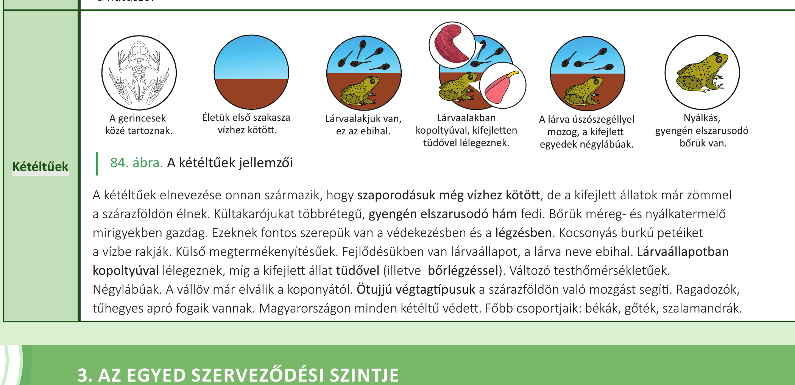
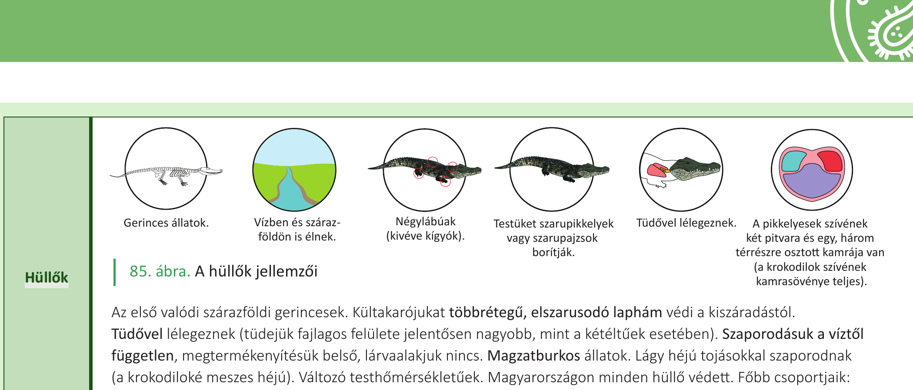
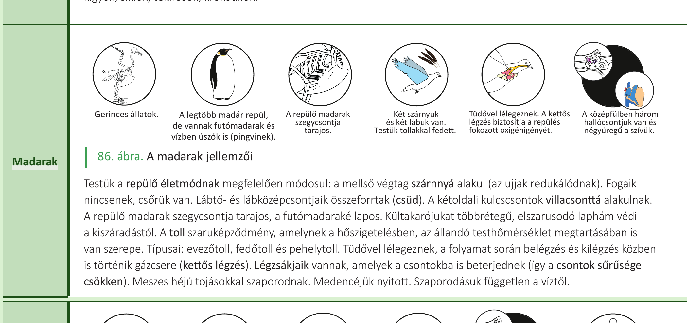

25. Kétéltűek, hüllők, madarak¶
A gerinces állatok fő csoportjai a halak, a kétéltűek, a hüllők, a madarak és az emlősök. A gerinces elnevezés egyrészt utal arra, hogy belső vázuk van, amit általában szilárd és kemény csont vagy néhány csoportnál porc alkot. Másrészt utal arra is, hogy szelvényes élőlényekről van szó, hiszen a gerincoszlop ismétlődő egységekből, csigolyákból épül fel. Kialakul az állkapocs. Kültakarójuk a bőr, amely több rétegből áll, és amelynek külső rétege minden gerincesnél többrétegű hám. A szárazföldi gerinceseknél a bőr legfelső rétege elhalt szaruréteg, amely a kiszáradástól véd.
Bélcsatornájuk háromszakaszos: az előbélnek a táplálék felaprításában, a középbélnek az emésztésben és felszívásban, míg az utóbélnek a salakanyagok kialakításában és eltávolításában van szerepe. Kloakának nevezzük a kiválasztó-, a szaporító- és az emésztőrendszer közös kivezető csatornáját (közös húgy-, ivar- és végbélkivezető), hátsó testnyílással nyílik a külvilágba. Szinte minden gerinces csoportnál előfordul, de az emlősökre már nem jellemző. Keringési rendszerük zárt, amelyben vér kering. Légzőszervük a kopoltyú, illetve a tüdő (a gerinceseknél ezek a szervek a bélből alakultak ki, míg gerincteleneknél a kültakaró származékai). A gerincesek lehetnek külső (halak, kétéltűek) és belső megtermékenyítésűek (hüllők, madarak, emlősök) is. A víztől független szaporodás, a kiszáradástól védő vastag szaruréteg tette lehetővé, hogy a hüllők váltak az első valódi szárazföldi, gerinces élőlényekké.
A halak, kétéltűek és a hüllők változó testhőmérsékletűek, tehát testhőmérsékletük nagymértékben függ a külső környezet hőmérsékletétől. A madarak és az emlősök állandó testhőmérsékletűek.
Kétéltűek¶
A kétéltűek elnevezése onnan származik, hogy szaporodásuk még vízhez kötött, de a kifejlett állatok már zömmel a szárazföldön élnek. Kültakarójukat többrétegű, gyengén elszarusodó hám fedi. Bőrük méreg- és nyálkatermelő mirigyekben gazdag. Ezeknek fontos szerepük van a védekezésben és a légzésben. Kocsonyás burkú petéiket a vízbe rakják. Külső megtermékenyítésűek. Fejlődésükben van lárvaállapot, a lárva neve ebihal. Lárvaállapotban kopoltyúval lélegeznek, míg a kifejlett állat tüdővel (illetve bőrlégzéssel). Változó testhőmérsékletűek. Négylábúak. A vállöv már elválik a koponyától. Ötujjú végtagtípusuk a szárazföldön való mozgást segíti. Ragadozók, tűhegyes apró fogaik vannak. Magyarországon minden kétéltű védett.
Főbb csoportjaik: békák, gőték, szalamandrák.
Hüllők¶
Az első valódi szárazföldi gerincesek. Kültakarójukat többrétegű, elszarusodó laphám védi a kiszáradástól. Testüket szarupikkelyek vagy szarupajzsok borítják. Tüdővel lélegeznek (tüdejük fajlagos felülete jelentősen nagyobb, mint a kétéltűek esetében). Szaporodásuk a víztől független, megtermékenyítésük belső, lárvaalakjuk nincs. Magzatburkos állatok. Lágy héjú tojásokkal szaporodnak (a krokodiloké meszes héjú). Változó testhőmérsékletűek. A pikkelyesek szívének két pitvara és egy, három térrészre osztott kamrája van (a krokodilok szívének kamrasövénye teljes). Vízben és szárazföldön is élnek. Négylábúak (kivéve kígyók). Magyarországon minden hüllő védett.
Főbb csoportjaik: kígyók, siklók, teknősök, krokodilok.
Madarak¶
Testük a repülő életmódnak megfelelően módosul: a mellső végtag szárnnyá alakul (az ujjak redukálódnak). Fogaik nincsenek, csőrük van. Lábtő- és lábközépcsontjaik összeforrtak (csüd). A kétoldali kulcscsontok villacsonttá alakulnak. A repülő madarak szegycsontja tarajos, a futómadaraké lapos. Kültakarójukat többrétegű, elszarusodó laphám védi a kiszáradástól. A toll szaruképződmény, amelynek a hőszigetelésben, az állandó testhőmérséklet megtartásában is van szerepe. Típusai: evezőtoll, fedőtoll és pehelytoll. Tüdővel lélegeznek, a folyamat során belégzés és kilégzés közben is történik gázcsere (kettős légzés). Légzsákjaik vannak, amelyek a csontokba is beterjednek (így a csontok sűrűsége csökken). Meszes héjú tojásokkal szaporodnak. Medencéjük nyitott. Szaporodásuk független a víztől. A középfülben három hallócsontjuk van és négyüregű a szívük. A kettős légzés biztosítja a repülés fokozott oxigénigényét. Két szárnyuk és két lábuk van.
A legtöbb madár repül, de vannak futómadarak és vízben úszók is (pingvinek).
Az állandó testhőmérsékletűség alapjai¶
A madarak és az emlősök állandó testhőmérsékletűek, amely köszönhető:
- a kiváló hőszigetelő rendszerüknek (bőraljában zsír, illetve a madaraknál a toll, emlősöknél a szőr),
- fejlett idegrendszerüknek (hipotalamusz, hőszabályozó központ),
- a hatékony oxigénellátást biztosító keringési rendszerüknek (nem keveredik az oxigéndús és a szén-dioxid-dús vér).
Érzékszerveik változatosak és nagymértékben elősegítik a tájékozódást, a védekezést vagy a támadást.
Ábrák¶

A kétéltűek főbb jellemzői: a gerincesek közé tartoznak, életük első szakasza vízhez kötött, lárvaalakjuk van (ebihal), lárvaalakban kopoltyúval, kifejletten tüdővel lélegeznek, a lárva úszószegéllyel mozog, a kifejlett egyedek négylábúak, nyálkás, gyengén elszarusodó bőrük van.

A hüllők főbb jellemzői: gerinces állatok, vízben és szárazföldön is élnek, négylábúak (kivéve kígyók), testüket szarupikkelyek vagy szarupajzsok borítják, tüdővel lélegeznek, a pikkelyesek szívének két pitvara és egy, három térrészre osztott kamrája van (a krokodilok szívének kamrasövénye teljes).

A madarak főbb jellemzői: gerinces állatok, a legtöbb madár repül, de vannak futómadarak és vízben úszók is (pingvinek), a repülő madarak szegycsontja tarajos, két szárnyuk és két lábuk van, testük tollakkal fedett, tüdővel lélegeznek, a kettős légzés biztosítja a repülés fokozott oxigénigényét, a középfülben három hallócsontjuk van és négyüregű a szívük.
Az anyag az 1. tankönyv 148, 149, 150. oldalain található.